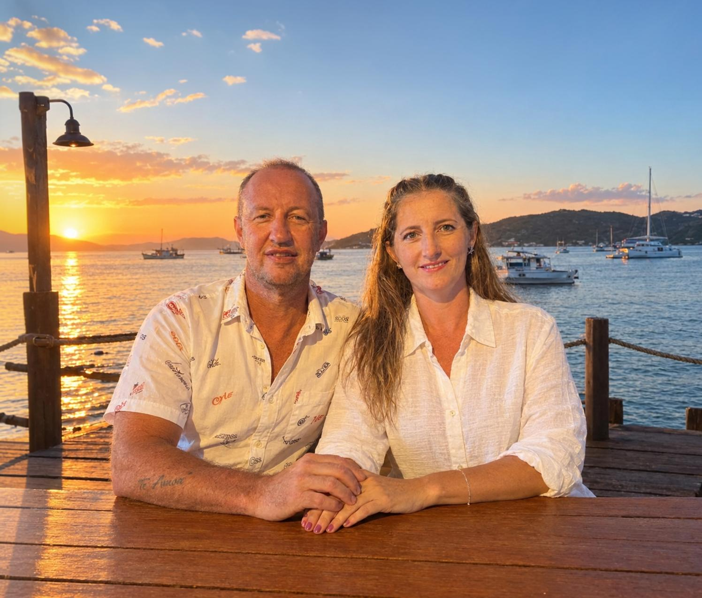

A Cerimônia
Paróquia Nossa Senhora do Bom Parto
início da cerimônia as 17h
Av Iguaçu 420, Centro
Nova Prata do Iguaçu - PR
06.FEVEREIRO.2027

O amor não se mede com o tempo, mas pelo que se constrói com ele.
Tutti & Sandra
NOVA PRATA DO IGUAÇU
O amor não se mede com o tempo, mas pelo que se constrói com ele.
Com a bênção de Deus e a presença
de nossos filhos,
é com imensa alegria que convidamos
você e sua família para celebrar
o nosso casamento.
Sábado, 06 de Fevereiro de 2027
Nova Prata do Iguaçu - PR
Paróquia Nossa Senhora do Bom Parto
início da cerimônia as 17h
Av Iguaçu 420, Centro
Nova Prata do Iguaçu - PR
Restaurante Aguia/ Maninho
Rua Francisco Ioti 690
Nova Prata do Iguaçu - PR
T & S
A sua presença tornará o nosso dia ainda mais especial e inesquecível!
Pedimos a gentileza de reservar os tons de branco e off-white para a noiva, e os tons de fúcsia para as nossas madrinhas.
Paleta das Madrinhas
Com carinho e alegria, esperamos vocês para celebrar este momento tão especial e único em nossas vidas.